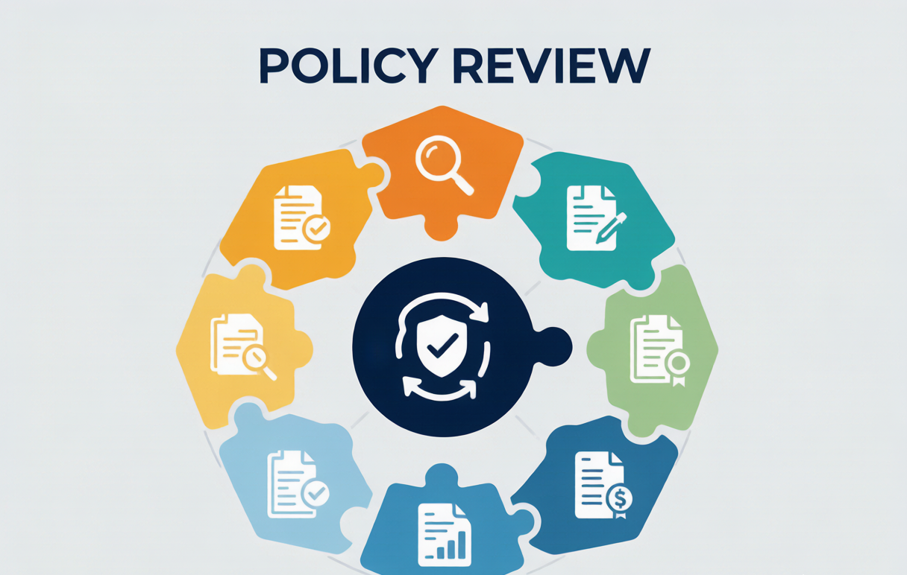

2025年你的保单该"体检"了：家庭保单年度检查清单，6步排查保障缺口
每年给保单做一次体检和给身体做体检一样重要。6步完整检查清单：保障是否足够、受益人是否更新、是否有重复保单、新风险是否覆盖。附真实案例和保单整理模板。
**摘要：** 买了保险就高枕无忧了？错。结婚生子、换工作涨薪、买房背贷——人生每进入一个新阶段，保障需求都会变。如果保单长期不"体检"，可能出现"保障不足"或"重复投保"两大问题。本文用真实教训告诉你为什么要做保单体检，以及怎么做。
一、为什么要给保单做年度体检？——3个真实教训
教训一：收入翻倍，保额原地踏步
**案例：** 北京的王先生，2018年刚工作时买了重疾险50万保额，当时年收入10万（保额=5倍年收入，合理）。2025年，他的年薪涨到了40万，但重疾险还是50万。
如果王先生现在确诊重疾，50万的理赔金只相当于他**1.25年的收入**——按照"保额=年收入3-5倍"的标准，他至少需要120-200万的重疾保障。这中间有**70-150万的保障缺口**。
收入每涨30%以上，就应该重新评估保额是否足够。
教训二：离婚了，受益人没改
**案例：** 深圳的李女士2019年买了定期寿险200万，受益人写的是当时的丈夫。2022年两人离婚，但李女士忘了修改受益人。2023年李女士不幸因病去世，200万理赔款根据保险合同**全部打给了前夫**，而她再婚的现任丈夫和两个子女一分钱没拿到。
这不是段子，这是银保监会年报中每年都有记录的典型案例。**保单受益人不会自动更新**，离婚、再婚、生子后必须手动修改。
教训三：买了新房，忘了背了300万债
**案例：** 杭州的陈先生2020年买了一套房，贷款300万。但他原有的定期寿险只有100万。万一陈先生不幸身故，300万房贷直接压到妻子身上——而保险只赔付100万，剩余200万的缺口要靠妻子一个人的工资来还。
买房后背贷金额=新增的保障需求。每增加100万房贷，至少增加100万定期寿险保额。
二、6步保单体检清单——每年花1小时，省下几十万

第1步：整理所有保单，建立家庭保单档案
先把家里所有保单翻出来，建立一张总表。格式如下：
| 被保险人 | 保险公司 | 产品名称 | 保单号 | 保障类型 | 保额 | 年交保费 | 缴费年限 | 保障期限 | 受益人 |
|---|---|---|---|---|---|---|---|---|---|
| 自己 | 平安 | 平安福2025 | PK2025XXXX | 重疾险 | 50万 | ¥5,800 | 20年 | 终身 | 配偶 |
| 自己 | 众安 | 尊享e生 | ZA2025XXXX | 百万医疗 | 400万 | ¥386 | 1年 | 1年 | — |
| 配偶 | 国寿 | 国寿福 | GS2025XXXX | 重疾险 | 30万 | ¥4,200 | 20年 | 终身 | 自己 |
| 孩子 | 平安 | 少儿平安福 | SP2025XXXX | 重疾+意外 | 30万 | ¥2,800 | 20年 | 至70岁 | — |
**技巧：** 用Excel维护这张表，全家人的保单放在一起管理。手机拍照保存备份，万一家里失火或遗失，还有电子版。
第2步：检查保额是否充足
对照以下标准，检查每个人的保额：
| 保障类型 | 保额标准 | 检查方法 |
|---|---|---|
| 定期寿险 | **年收入×5-10倍** | 够覆盖房贷余额+5年家庭生活费 |
| 重疾险 | **年收入×3-5倍**（一线城市至少50万） | 够覆盖3-5年治疗+康复+收入损失 |
| 百万医疗险 | **200-400万** | 大多数产品够用，无需重复买 |
| 意外险 | **年收入×5-10倍** | 保费低（¥200-500/年），保额往高买 |
**关键判断：** 定期寿险保额<房贷余额 → 立即补充！这是最大的家庭财务风险敞口。
第3步：检查保障是否全面——4类基础保障缺一不可
理想状态下，一个成年人至少应覆盖以下4类保障：
| 保障类型 | 作用 | 优先级 | 年保费（30岁参考） |
|---|---|---|---|
| 百万医疗险 | 报销大额住院费 | 🔴 第一优先 | ¥200-400 |
| 意外险 | 意外身故/伤残赔付 | 🟠 第二优先 | ¥200-500 |
| 重疾险 | 确诊即赔，补偿收入损失 | 🟡 第三优先 | ¥5,000-8,000 |
| 定期寿险 | 身故赔付，覆盖家庭债务 | 🟢 第四优先（有家庭者） | ¥1,000-3,000 |
**自查清单：**
- ❓ 配偶有没有定期寿险？（很多家庭只有一方买了）
- ❓ 孩子有没有意外险？（儿童意外概率远高于重疾）
- ❓ 老人有没有百万医疗？（老人最需要，但也最难买）
第4步：检查受益人是否需要更新
以下情况**必须**修改受益人：
- 离婚/再婚 → 原配不再是受益人
- 生子/领养 → 需要把子女也列为受益人
- 受益人先于被保险人去世 → 需重新指定
- 原指定"法定继承人" → 改为"指定受益人"更稳妥（避免遗产纠纷）
第5步：检查是否有新风险需要覆盖
| 人生变化 | 新增风险 | 应对方案 |
|---|---|---|
| 买房 | 房贷断供风险 | 增加定期寿险保额=房贷余额 |
| 生子/二胎 | 子女抚养费 | 增加定期寿险保额+教育金规划 |
| 换高风险职业 | 意外/伤残风险增加 | 确认意外险是否覆盖新职业 |
| 收入大幅提升 | 收入替代需求增加 | 重疾险+定期寿险同步提升保额 |
| 父母年纪大了 | 需要赡养支持 | 给父母补充百万医疗险+意外险 |
第6步：评估保费负担是否合理
**黄金法则：** 家庭年保费支出≤家庭年收入的**8%-10%**。
| 家庭年收入 | 合理保费范围 | 超出应警惕 |
|---|---|---|
| 10万 | 8,000-10,000元 | >12,000元 |
| 20万 | 16,000-20,000元 | >24,000元 |
| 30万 | 24,000-30,000元 | >36,000元 |
| 50万 | 40,000-50,000元 | >60,000元 |
如果保费占比超过15%，检查是否有以下问题：买了太多"储蓄型"而非"保障型"保险、重复投保、附加险太多。
三、常见保单问题和调整建议
问题一：只买了储蓄型保险，完全没有保障型
**现象：** 家里3份年金险，每年交3万保费，但一份重疾险和百万医疗险都没有。
**风险评估：** 万一确诊大病，年金险还没开始领钱，治疗费得全部自掏。
**调整方案：** 暂停新增储蓄型保险，**优先补配百万医疗险（年交约300元）+意外险（年交约200元）+定期寿险（年交约1,000元）**，把基础的保障框架搭起来。
问题二：夫妻保额严重不均衡
**现象：** 丈夫重疾险100万+定期寿险300万；妻子重疾险30万+定期寿险0万。
**风险评估：** 万一妻子不幸发生风险，家庭保障缺口巨大。
**调整方案：** 至少给妻子配置与丈夫同等比例的保障——定期寿险保额=家庭债务分担比例，重疾险至少50万。
问题三：保单断缴了怎么办？
2年内可申请**复效**（恢复合同效力），需补缴保费+少量滞纳金。超过2年则合同终止，只能退保取回现金价值（通常损失较大）。建议设置**自动扣款提醒**，避免因遗忘导致断缴。
常见问题 FAQ
**Q：保单体检要每年做一次吗？有必要吗？**
A：建议每年固定时间（如每年1月或7月）做一次。如果当年有重大人生变化（结婚、生子、买房、换工作、父母年迈需要赡养），应立即检查而非等年度。1小时的检查时间，可能帮你发现几十万的保障缺口——这个投入产出比极高。很多人在理赔被拒时才后悔没提前检查，可惜那时候已经晚了。
**Q：发现保障缺口怎么补？应该先补哪个？**
A：按优先级阶梯补充：**百万医疗险（年交¥200-400）→ 意外险（年交¥200-500）→ 定期寿险（年交¥1,000-3,000）→ 重疾险（年交¥5,000-8,000）**。这种"先小额后大额"的顺序，让你用最低的成本先把最基础的保障架起来，再逐步升级。不要在预算紧张时一上来就买高额重疾险，导致其他保障全部空白。
**Q：重复买的保险要退吗？退保有什么损失？**
A：先确认是否真的是"重复"而非"互补"。比如两份百万医疗险确实是重复（医疗险是报销型，多买不叠加赔付）。如果是重疾险多份，则并非重复——重疾险是给付型，多份分别赔付。如果确认重复需要退保，注意：**退保只退现金价值，前几年退保损失巨大（可能只退30%-50%）**。建议确认新产品已经过了等待期后再退旧产品，避免出现保障真空期。
*本文仅供信息参考，不构成投保建议。具体保障方案请根据个人实际情况评估，必要时咨询专业保险顾问。保单复效及退保以保险公司合同条款为准。*